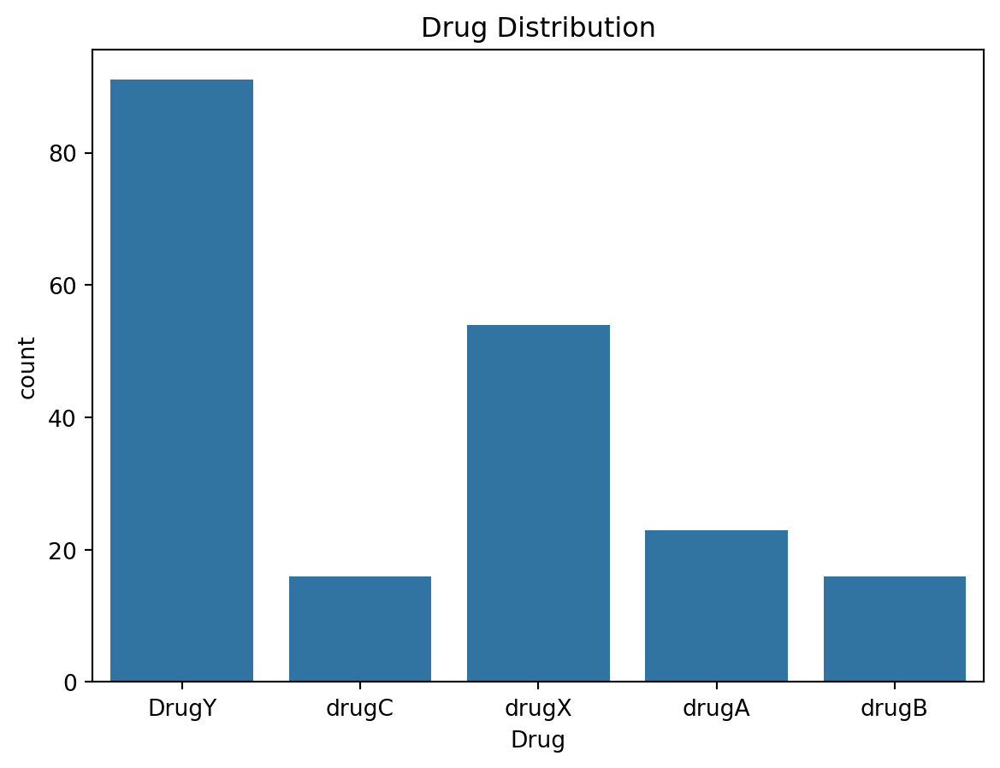
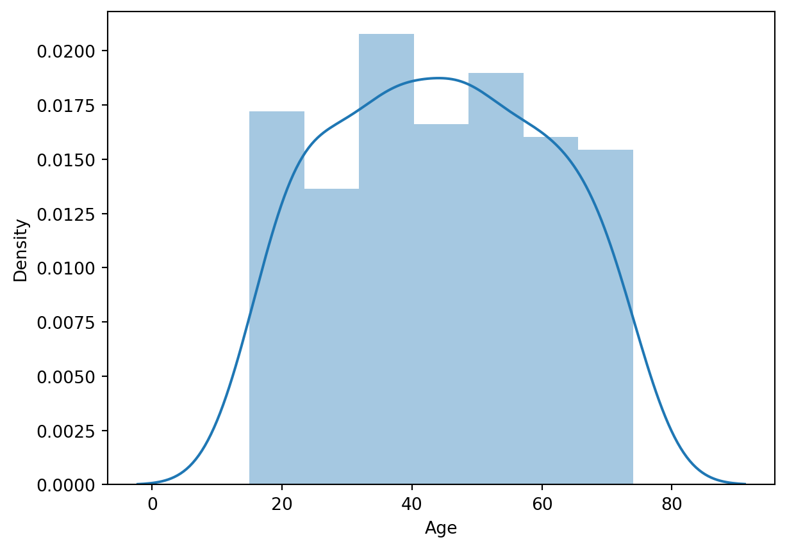
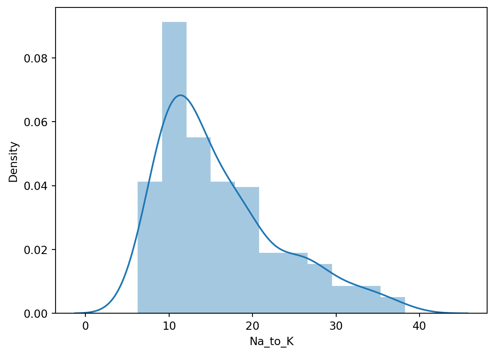
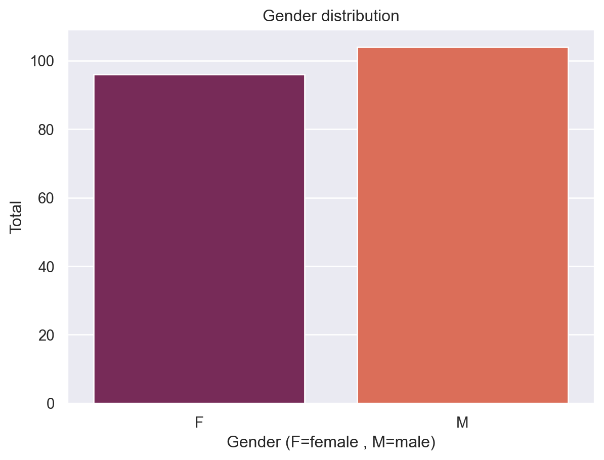
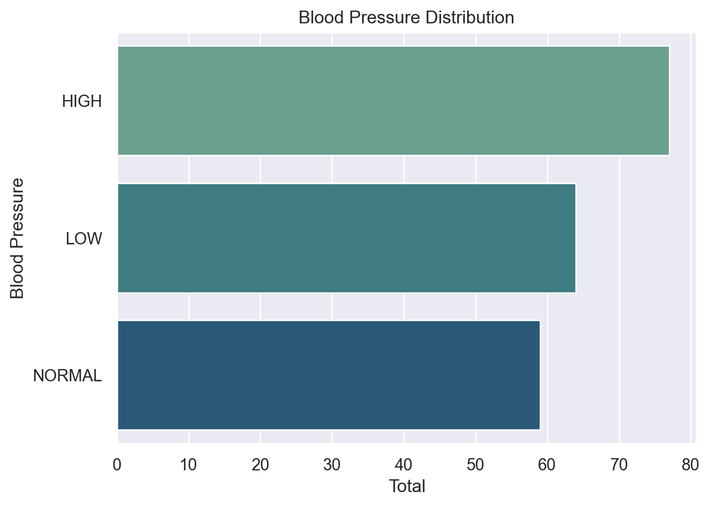
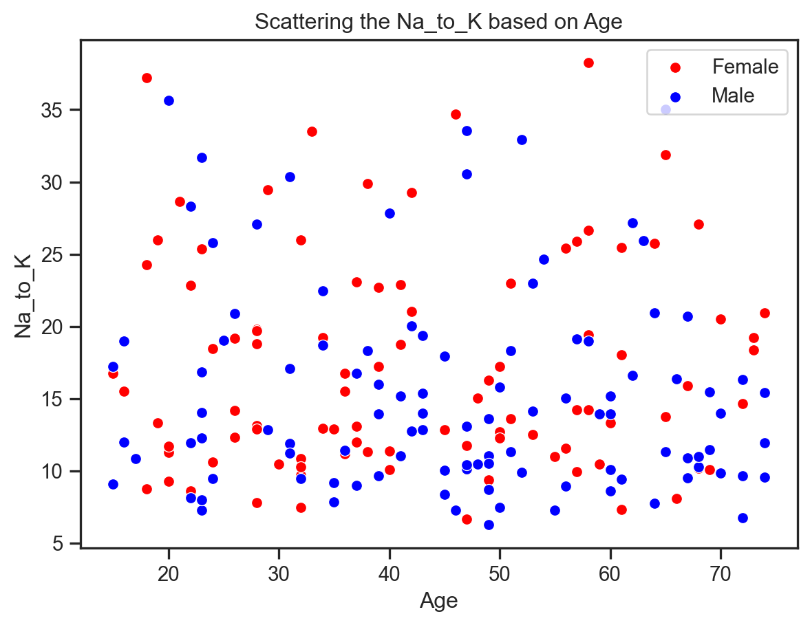
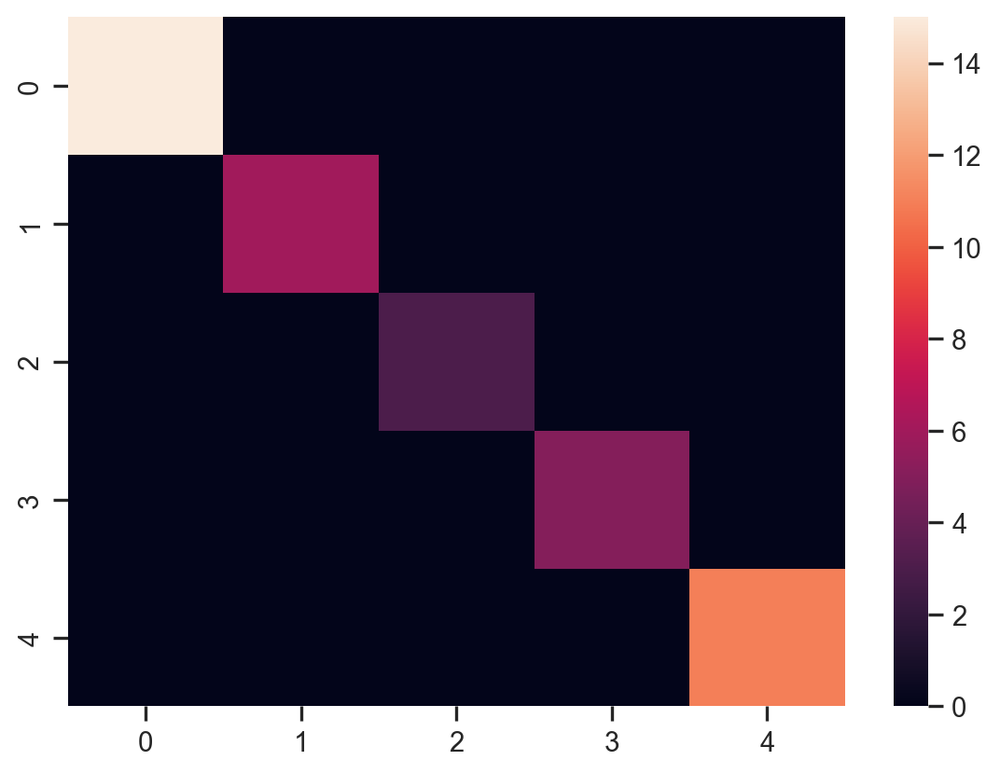
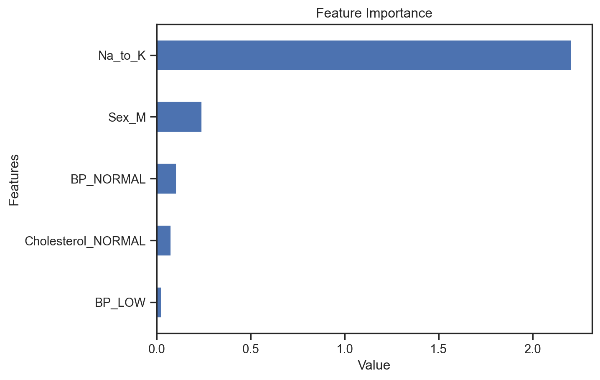

import numpy as np
import pandas as pd
import matplotlib.pyplot as plt
import seaborn as sns
import plotly.express as px
from sklearn.metrics import classification_report , accuracy_score , confusion_matrix
from sklearn.model_selection import train_test_split
from sklearn.linear_model import LogisticRegression
from category_encoders import OrdinalEncoder
from sklearn.ensemble import RandomForestClassifier
import warnings
warnings.filterwarnings('ignore')Classification
code
analysis
Drug Classification
Introduction In this blog post, we shall delve into a machine learning project that concentrates on classifying drugs according to patient features. The dataset assigned for this task encapsulates patients’ information and the prescribed medications. To predict the suitable drug for a patient, our objective entails constructing and assessing two classification models: Logistic Regression and Random Forest. Exploring the Dataset
Our dataset contains details of 200 rows and 6 columns. Each column is a variable, and the variables are : Age, Sex, Blood Pressure, Cholestrol, The ratio of Sodium to Potassium in the Blood and finally, the drug type. This can be verified by running
df = pd.read_csv("drug200.csv")
df| Age | Sex | BP | Cholesterol | Na_to_K | Drug | |
|---|---|---|---|---|---|---|
| 0 | 23 | F | HIGH | HIGH | 25.355 | DrugY |
| 1 | 47 | M | LOW | HIGH | 13.093 | drugC |
| 2 | 47 | M | LOW | HIGH | 10.114 | drugC |
| 3 | 28 | F | NORMAL | HIGH | 7.798 | drugX |
| 4 | 61 | F | LOW | HIGH | 18.043 | DrugY |
| ... | ... | ... | ... | ... | ... | ... |
| 195 | 56 | F | LOW | HIGH | 11.567 | drugC |
| 196 | 16 | M | LOW | HIGH | 12.006 | drugC |
| 197 | 52 | M | NORMAL | HIGH | 9.894 | drugX |
| 198 | 23 | M | NORMAL | NORMAL | 14.020 | drugX |
| 199 | 40 | F | LOW | NORMAL | 11.349 | drugX |
200 rows × 6 columns
Data Preprocessing: We can check for duplicates in the dataset using df.duplicated().sum() here, the output is 0, implying that there are no duplicates.
df.info()<class 'pandas.core.frame.DataFrame'>
RangeIndex: 200 entries, 0 to 199
Data columns (total 6 columns):
# Column Non-Null Count Dtype
--- ------ -------------- -----
0 Age 200 non-null int64
1 Sex 200 non-null object
2 BP 200 non-null object
3 Cholesterol 200 non-null object
4 Na_to_K 200 non-null float64
5 Drug 200 non-null object
dtypes: float64(1), int64(1), object(4)
memory usage: 9.5+ KBdf.duplicated().sum()0Further, we can generate plots to visualize the distribution of each target varible. For example, we can see the count of each drug using:
import seaborn as sns
sns.countplot(x=df['Drug'])
plt.title('Drug Distribution');
sns.distplot(df['Age']);
sns.distplot(df['Na_to_K']);
sns.set_theme(style="darkgrid")
sns.countplot(data=df ,x= df['Sex'] , palette='rocket')
plt.xlabel('Gender (F=female , M=male)')
plt.ylabel('Total')
plt.title('Gender distribution');
sns.countplot(y=df['BP'], data=df , palette="crest")
plt.ylabel('Blood Pressure')
plt.xlabel('Total')
plt.title('Blood Pressure Distribution');
sns.set_theme(style="ticks")
sns.scatterplot(x=df.Age[df.Sex=='F'], y=df.Na_to_K[(df.Sex=='F')], c="Red" , )
sns.scatterplot(x=df.Age[df.Sex=='M'], y=df.Na_to_K[(df.Sex=='M')], c="Blue")
plt.title('Scattering the Na_to_K based on Age')
plt.legend(["Female", "Male"])
plt.xlabel("Age")
plt.ylabel("Na_to_K");
plt.grid(visible=False)
Define features (X) and target (y)
X = df.drop('Drug' , axis='columns')
y = df['Drug']X = pd.get_dummies(X)Splitting
X_train , X_test , y_train , y_test = train_test_split(X , y , test_size=0.2 , shuffle= True ,random_state=42)Machine Learning Models
- Logistic Regression
lr_model = LogisticRegression(max_iter=1500)
lr_model.fit(X_train , y_train)
lr_model.score(X_train , y_train)
lr_pred = lr_model.predict(X_test)accuracy_score(y_test , lr_pred)
print(classification_report(y_test , lr_pred)) precision recall f1-score support
DrugY 1.00 1.00 1.00 15
drugA 1.00 1.00 1.00 6
drugB 1.00 1.00 1.00 3
drugC 1.00 1.00 1.00 5
drugX 1.00 1.00 1.00 11
accuracy 1.00 40
macro avg 1.00 1.00 1.00 40
weighted avg 1.00 1.00 1.00 40
sns.heatmap(confusion_matrix(y_test , lr_pred));
- Random Forest
RF_model = RandomForestClassifier(n_estimators= 200)
RF_model.fit(X_train , y_train)
RF_model.score(X_train , y_train)
RF_pred = RF_model.predict(X_test)accuracy_score(y_test , RF_pred)
print(classification_report(y_test , RF_pred)) precision recall f1-score support
DrugY 1.00 1.00 1.00 15
drugA 1.00 1.00 1.00 6
drugB 1.00 1.00 1.00 3
drugC 1.00 1.00 1.00 5
drugX 1.00 1.00 1.00 11
accuracy 1.00 40
macro avg 1.00 1.00 1.00 40
weighted avg 1.00 1.00 1.00 40
sns.heatmap(confusion_matrix(y_test , RF_pred));Highest Influencing Features
features = X_test.columns
importance_f = lr_model.coef_[0]
feat_imp = pd.Series(importance_f , index=features).sort_values()
feat_imp.tail().plot(kind= 'barh')
plt.xlabel("Value")
plt.ylabel("Features")
plt.title("Feature Importance");
Conclusion
At last i used 2 models logitic regression model and random forest model both got 100% accuracy in both training and testing